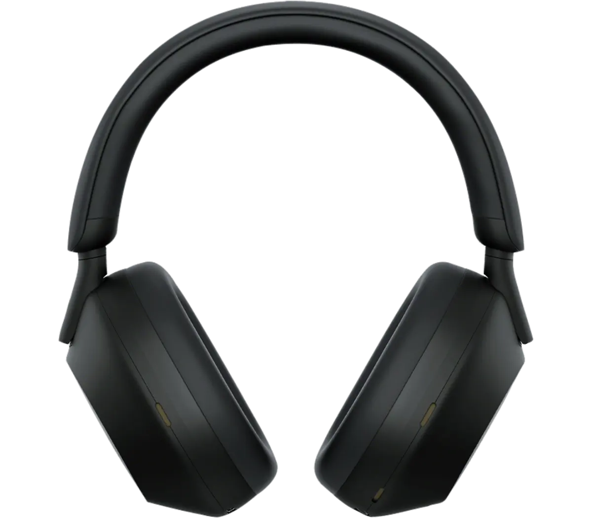

Introducing Sony WXTX-10000

The Sony WXTX-10000 introduces the newly developed driver that provides high res audio quality and a integrated processor V2 that gives HD Noise Canceling
At a Glance
New Design
The Sony WXTX-10000 boasts a revolutionary design that prioritizes comfort without compromising on style. Crafted with ultra-lightweight materials, these headphones are engineered to provide a barely-there feel, perfect for all-day use. The over-ear design features plush, memory foam ear cushions that conform to the shape of your ears, ensuring a snug and personalized fit. This ergonomic approach not only enhances comfort but also improves noise isolation, allowing you to fully immerse yourself in your audio experience. The adjustable headband is designed to distribute weight evenly, preventing pressure points and making the WXTX-10000 ideal for extended listening sessions
The Sony WXTX-10000 features an intuitive button layout on the side to enhance your user experience. These new, ergonomically placed buttons are designed for easy access and seamless control. The power button allows you to effortlessly turn your headphones on or off with a simple press. Volume control buttons let you adjust the volume on the fly, ensuring you never miss a beat. With dedicated playback control buttons, you can play, pause, or skip tracks, keeping your music experience uninterrupted. The noise cancellation toggle makes it easy to switch between active noise cancellation and ambient sound modes, so you can stay aware of your surroundings when needed. Additionally, a voice assistant activation button quickly gives you access to Google Assistant or Siri with just a press..